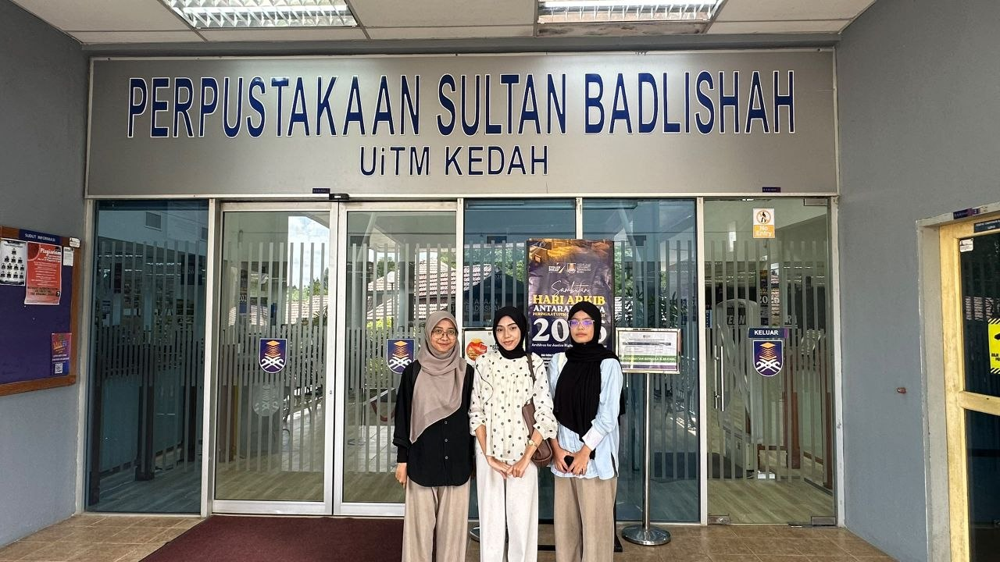

Gallery
Welcome to our Gallery! Here, you can explore a collection of photos that capture the facilities, services, and activities at PSB UiTM Kedah. These images provide a glimpse into the learning environment and experiences enjoyed by students and lecturers..

VISIT LIBRARY
During my visit to PSB UiTM Kedah, I found that a variety of facilities are provided to meet the needs of both students and lecturers. These facilities help make the teaching and learning process more convenient, comfortable, and effective..
COUNTER SERVICE
During my visit to PSB UiTM Kedah, I noticed that the service counter plays an important role in assisting students and lecturers with their inquiries and needs. The staff were friendly and helpful, making it easier for visitors to obtain information and access the services provided..
INFORMATION SERVICE
The Information Service at PSB UiTM Kedah serves as a helpful point of reference for students and lecturers. It provides clear and accessible information about the facilities, resources, and services available, ensuring a smoother and more convenient user experience..